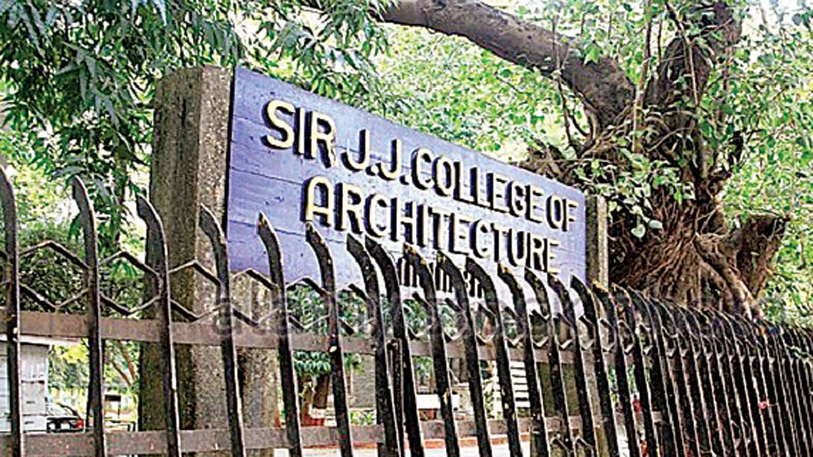
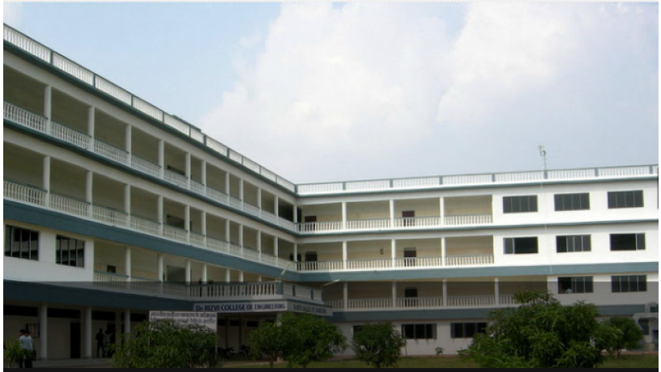
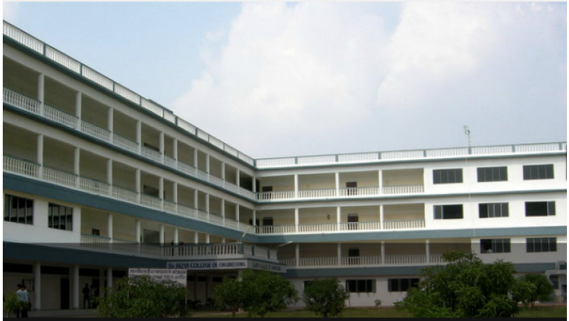
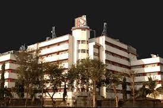

Best College for B.Arch in Mumbai
Sir JJ College Of Architecture - [SJJCA]
Mumbai city in the Indian state of Maharashtra. It is one of the most famous and heritage colleges in India as its history can be traced back up to 1857. The college campus is rented to the Maharashtra Government as per the deeds of Sir Jamsetjee Jejeebhoy (Sir J. J.). The college comprises two buildings where the departments are placed and also consist of a small building which consists of the workshop. The college was reorganized and established in the year of 1913 to make it suitable for Architectural training. Sir JJ College of Architecture Mumbai is affiliated to the University of Mumbai. Sir JJ College of Architecture has bagged 4th rank according to India Today for Fine Arts.
Candidates who wish to apply for the B. Arch course must score a valid score in the NATA (National Aptitude Test in Architecture) examination or in JEE Main (Joint Entrance Examination). Similarly, the candidates who wish to apply for the M. Arch course must score a valid score in the MAH - M. Arch – CET examination (i.e.) the Common Entrance Test conducted by the Maharashtra government especially for the M. Arch course.
RIZVI College of Arcitecture

RIZVI College of Arcitecture
Rizvi College of Arts, Science, and Commerce (RCASC) was established was started in the year 1985. The college is affiliated to the University of Mumbai and is accredited with an ‘A’ grade by NAAC
IES College Of Architecture
The Indian Education Society’s College of Architecture was established in 1995 with the aim of moulding architecture students into high caliber professionals.
Presently, the IES’s College of Architecture offers a Bachelor of Architecture degree, under the five years program of the University of Mumbai and four part time courses in Masters of Architecture under the YashwantraoChavan Maharashtra Open University (M.Arch Construction Management/Environmental Architecture/General Architecture/Urban and Regional Planning)
The Bachelors of Architecture course is scheduled as a 5-year program with a semester pattern as prescribed by the Mumbai University. Through the years, the college has always produced toppers at both institutional and University level and has always remained active on an extra-curricular level by participating at various Architectural Competitions and other events.
Thakur School of Architecture

NMIMS Balwant Sheth School Of Architecture

NMIMS Balwant Sheth School of Architecture (BSSA), Mumbai comes under the aegis of NMIMS (Deemed to be University), Mumbai. The institute offers degree courses in the discipline of Architecture, Interior Environment, etc. BSSA Mumbai has a solid academic and resource base with modern facilities and infrastructure. The school focuses on user-centricity to create valuable spaces providing a sustainable environment for years to come.
L.S. Raheja School Of Architecture

L.S Raheja School of Architecture, established by its parent trust “Bombay Suburban Art and Craft Education Society”, is an architecture school offering UG, PG, Diploma, and Certificate courses to students. Admission to the college is merit and entrance-based. The students are required to appear for the NATA examination for UG admissions whereas PG admissions are based on counseling only. To start with the application process, the students must apply offline to fill the application form by visiting the campus in person.
L S Raheja School of Architecture cut off for B.Arch admissions changes every year. The estimated rank lies between 100-145 for the admission.